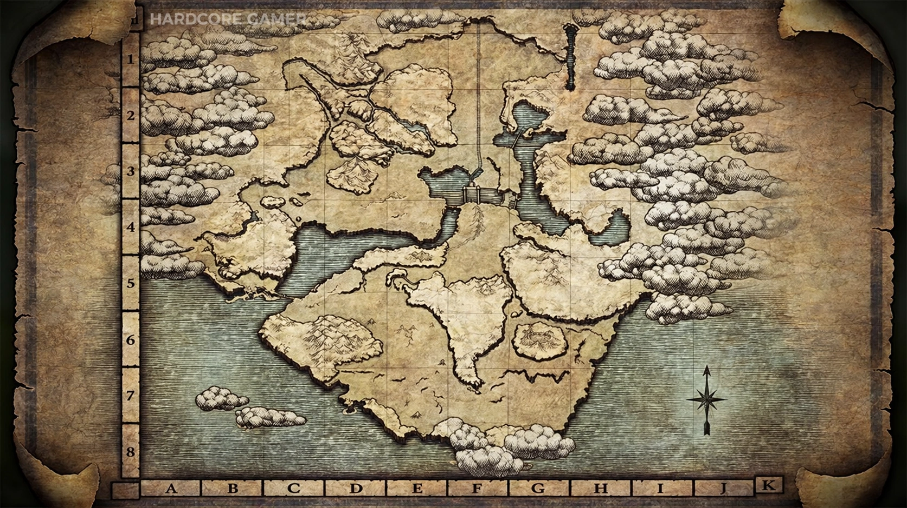
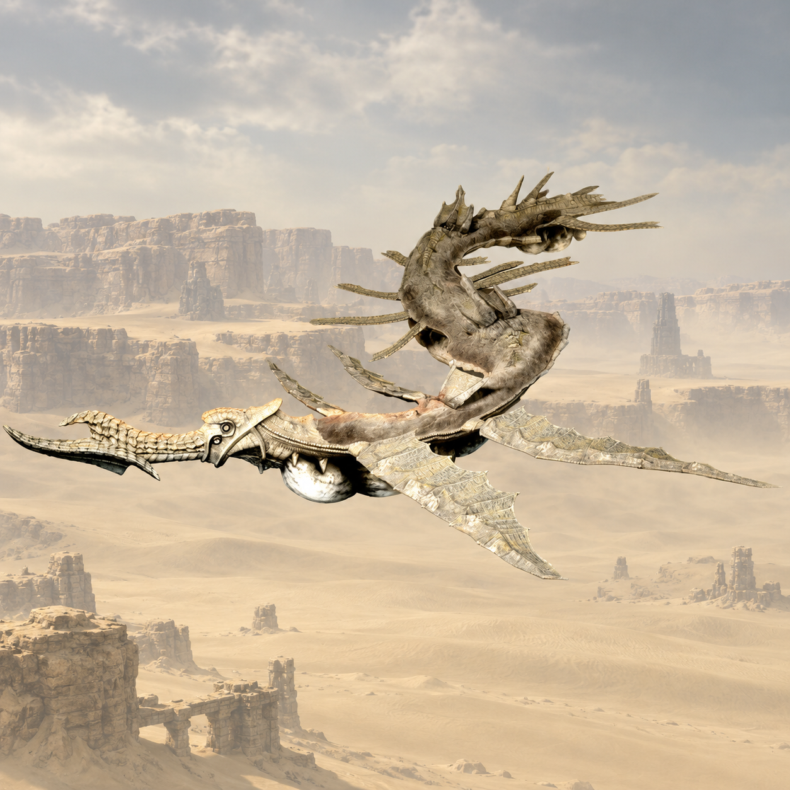
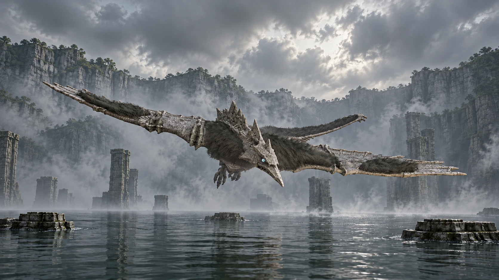
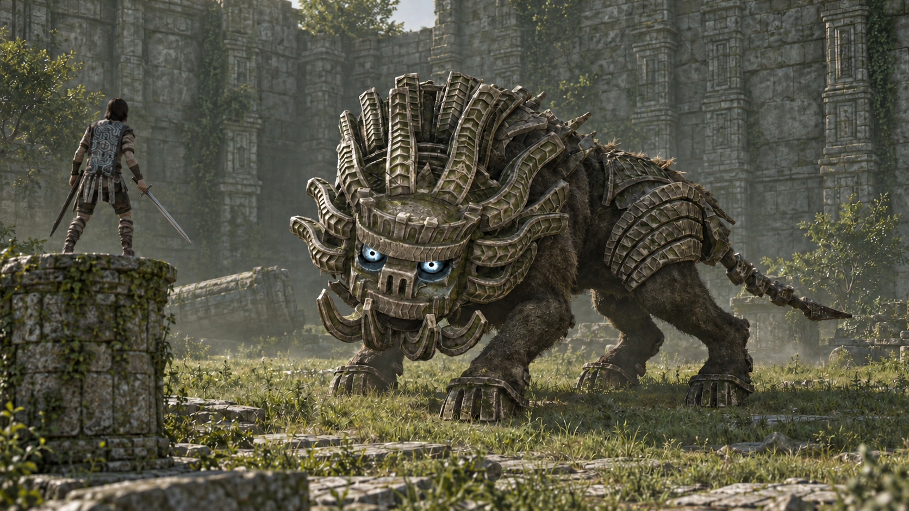

Santuário da Adoração
Em F4, o santuário é o ponto de retorno da jornada e o lugar onde Mono repousa.
Conhecer Mono ↗Atlas · Shadow of the Colossus
Dezesseis encontros espalhados pelo silêncio.
Toque em um marcador para descobrir quem habita ali.
Pontos individuais transcritos dos mapas de referência. Ative uma categoria e amplie para separar os marcadores próximos. Moedas exclusivas do remake de PS4.

Selecione um marcador para ver a ficha ao lado. Pins: colossos · Losangos: locais · Colecionáveis e mini templos: pontos coloridos. Clique e arraste para percorrer o mapa. Use + para ampliar. Deslize o mapa para explorar os lados.
Precisão limitada aos mapas de referência · Base limpa com auxílio de IA · Referências: Portal E7 / Hardcore Gamer ↗
Seu diário de viagem
Salvo somente neste navegador. Você pode desmarcar qualquer encontro.
Nenhum colosso pendente. Desative o filtro para rever os encontros.
Pontos de referência
Em F4, o santuário é o ponto de retorno da jornada e o lugar onde Mono repousa.
Conhecer Mono ↗A travessia de entrada se estende até o santuário. Sua silhueta ajuda a reconhecer o centro das Terras Proibidas.
A jornada de Wander ↗Use os marcadores numerados para localizar cada encontro. A ordem acompanha a sequência dos colossos no jogo.
Voltar ao mapa ↑Localizações aproximadas. Referência: Santuário da Adoração.
Orientações de viagem
Em áreas iluminadas, erga a espada e observe onde os feixes se encontram para orientar sua busca.
Aproveite a montaria nas grandes planícies. Algumas passagens e acessos às arenas precisam ser percorridos a pé.
O marcador indica a região do encontro, não uma rota em linha reta. Procure pontes, trilhas e entradas nas rochas.
Paisagens das Terras Proibidas

Areia e céu aberto no encontro com Phalanx.
Explorar a ficha ↗
Água, névoa e ruínas na arena de Avion.
Explorar a ficha ↗
Estruturas antigas e vegetação na arena de Cenobia.
Explorar a ficha ↗